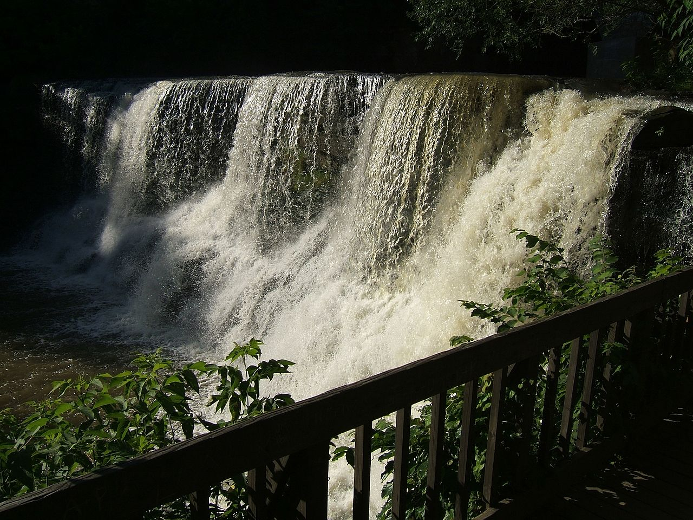
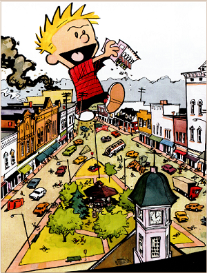

Checkpoint: Chagrin Falls

Welcome to the town of Chagrin Falls!
This town is perhaps most notable for its historical houses, and other buildings. Many homes in this area are over 100 years old, and have a plaque reading "Century Home" to distinguish them.
Aside from just old buildings, the town is known for its beautiful town square, waterfalls, emphasis on local business, restaraunts, and memorial day celebration (known as "Blossom"). This celebration entails a carnival in the town's main park, food carts on the streets, parades on both Sunday and Monday, a flyover, hot air balloons, and a 5 mile run. (image courtesy of Jason Morrison / CC BY).
This town is perhaps most notable for its historical houses, and other buildings. Many homes in this area are over 100 years old, and have a plaque reading "Century Home" to distinguish them.
Aside from just old buildings, the town is known for its beautiful town square, waterfalls, emphasis on local business, restaraunts, and memorial day celebration (known as "Blossom"). This celebration entails a carnival in the town's main park, food carts on the streets, parades on both Sunday and Monday, a flyover, hot air balloons, and a 5 mile run. (image courtesy of Jason Morrison / CC BY).
{kind=link}
Chagrin has also been the home of several notable people throughout its history.
Among them is Bill Waterson, creator of the famous children's comic "Calvin and Hobbes". Here we see a famous illustration from this series, where Calvin is seen as a giant rampaging through the town square (known to locals as the triangle, due to its shape) carrying The Popcorn Shop, an ice cream place originating from Chagrin (image courtesy of Calvin and Hobbes Wiki). In addition to that, the town has been home to many other notable individuals.
In the realm of pop culture alone, Casey Cott, Lee Unkrich, and Scott Weiland have all called this town home at one point or another. Casey Cott is known for his role on the show Riverdale as Kevin Keller (information courtesy of tvline.com). Lee Unkrich has worked on some of the most beloved movies from Pixar. From having a directoral (or co-directoral) role on such movies as Toy-Story 2 and 3, Finding Nemo, Monsters, Inc, and most recently Coco to his writing roles on Dante's Lunch, Toy-Story 3, and Coco, to various other roles on various other movies, Unkrich has solidified his career in Children's movies (information courtesy of imdb). Scott Weiland was a singer in various grunge and rock groups. His two most famous acts were Stone Temple Piolots, and the supergroup (a band founded by musicians from other bands) Velvet Revolver, whihc was started with Weiland as well as Dave Kushner, a member of such bands as Wasted Youth, Danzing, and Jane's Addiction, as well as Matt Sorum, Duff Mckagan, and Slash from Guns 'n' Roses (information Courtesy of wikipedia). While it retains its status as a small town, several of its people have gone on to make waves in the entertainment industry.
Among them is Bill Waterson, creator of the famous children's comic "Calvin and Hobbes". Here we see a famous illustration from this series, where Calvin is seen as a giant rampaging through the town square (known to locals as the triangle, due to its shape) carrying The Popcorn Shop, an ice cream place originating from Chagrin (image courtesy of Calvin and Hobbes Wiki). In addition to that, the town has been home to many other notable individuals.
In the realm of pop culture alone, Casey Cott, Lee Unkrich, and Scott Weiland have all called this town home at one point or another. Casey Cott is known for his role on the show Riverdale as Kevin Keller (information courtesy of tvline.com). Lee Unkrich has worked on some of the most beloved movies from Pixar. From having a directoral (or co-directoral) role on such movies as Toy-Story 2 and 3, Finding Nemo, Monsters, Inc, and most recently Coco to his writing roles on Dante's Lunch, Toy-Story 3, and Coco, to various other roles on various other movies, Unkrich has solidified his career in Children's movies (information courtesy of imdb). Scott Weiland was a singer in various grunge and rock groups. His two most famous acts were Stone Temple Piolots, and the supergroup (a band founded by musicians from other bands) Velvet Revolver, whihc was started with Weiland as well as Dave Kushner, a member of such bands as Wasted Youth, Danzing, and Jane's Addiction, as well as Matt Sorum, Duff Mckagan, and Slash from Guns 'n' Roses (information Courtesy of wikipedia). While it retains its status as a small town, several of its people have gone on to make waves in the entertainment industry.

To further explore Chagrin Falls, click here
Pedaling for Parkinsons claims no affiliation with Google Street View